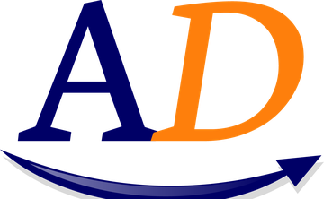

Alpha Driver privacy policy
Last updated 21 October 2026
Alpha Driver is made by Alpha Direct Insurance Company (Botswana). We built it so your driving data stays on your phone.
What the app uses, and why
Camera: to record dashcam video and to spot cars, people, animals, signs and lanes. This is done on your phone; video is not sent to us.
Location: to show your speed and the speed limit, and to stamp clips. Your approximate position is sent to Open-Meteo (open-meteo.com) only to fetch the local weather; it is not linked to you.
Motion sensors: to detect a crash and keep the clip.
Microphone: only to record sound with your video, if you switch that on.
Loved ones: names and phone numbers you add in Settings stay on your phone only. After a crash (unless you press "I'm OK") or when you press SOS, the app opens your phone's own messaging app with a text ready to send - it holds your location as a map link. We never receive these numbers or messages, and the app has no permission to send texts by itself.
What we collect
We do not collect, sell or share your personal data. There are no accounts, no ads and no tracking. Videos, trips, scores and settings stay on your phone until you delete them. If you choose to share a clip or claim pack, you decide where it goes.
Children
The app is meant for drivers and is not aimed at children.
Contact
Questions: omni@alphadirect.co.bw. Alpha Direct Insurance Company, Gaborone, Botswana. We follow the Botswana Data Protection Act.